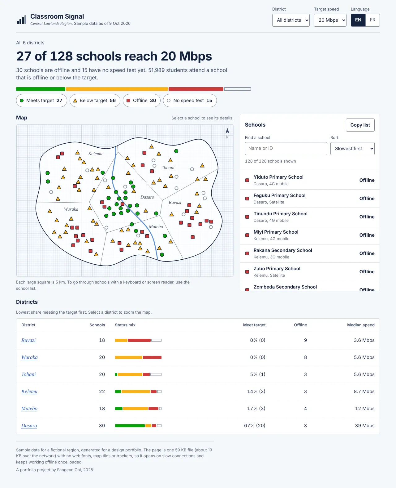
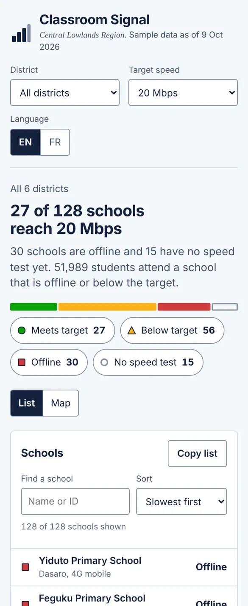

Monitor
Classroom Signal
Which schools in a region have usable internet, for district officers working on a phone.

Problem
District education officers, regulators and providers follow up on school connections, often from a phone on a shared or 3G connection. They need three answers quickly:
- How many schools reach the target speed?
- Where are the problems?
- What is wrong at one school, and who should fix it?
Details
- The page opens with the answer as a sentence: “27 of 128 schools reach 20 Mbps”.
- Each status has its own shape, colour and word: circle, triangle, square, hollow circle.
- The map is drawn on graph paper, each square 5 km, with no map tiles. District borders and labels are computed from the school positions.
- The school list holds everything the map shows, with search and sorting; it is also the keyboard and screen-reader path.
- Each school shows its 7-day median, a 14-day chart of daily tests with a table version, and its connection, power and students.
- “Copy list” gives CSV for spreadsheets and messages. The target can be 10, 20 or 50 Mbps.
- English and French. One file of about 60 KB that keeps working offline once loaded.

Accessibility
Checked with axe-core in 26 states, light and dark, phone and desktop. It found two problems, both fixed: the school rows had hidden labels that left out words shown on screen, and the page had no main landmark. Lighthouse scores it 100 for accessibility. Not yet tested with screen-reader users.
Next
- Watch three or four district officers use it and note where they hesitate.
- Connect real data through an API and cache it for offline use.
- Add a print view for monthly reports.
Built with an AI coding assistant.